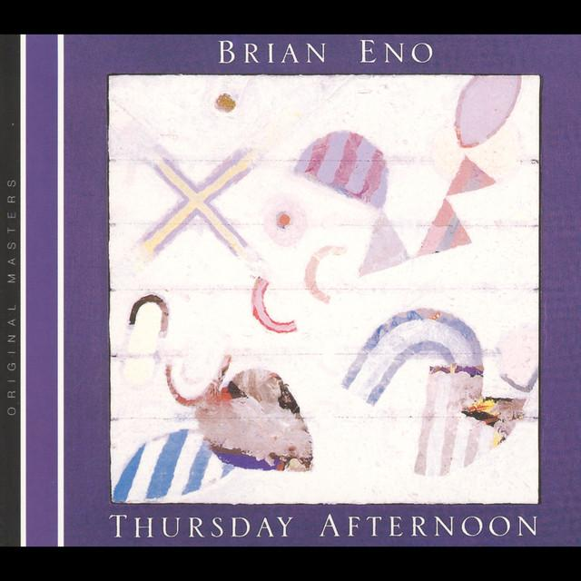

Melodies in ambient music are often slow, simple, and repetitive. Rather than using memorable hooks or fast-moving phrases, ambient composers create gentle melodic ideas that evolve gradually over time. Long sustained notes and repeated patterns are common, helping to create a calm and reflective atmosphere. Small changes to the melody may occur slowly, encouraging listeners to focus on subtle details rather than dramatic contrasts.
Example:
An ambient piece may repeat a short melodic idea for several minutes while gradually changing the accompaniment, texture, or timbre around it. These small changes help maintain interest while preserving the peaceful atmosphere of the music.